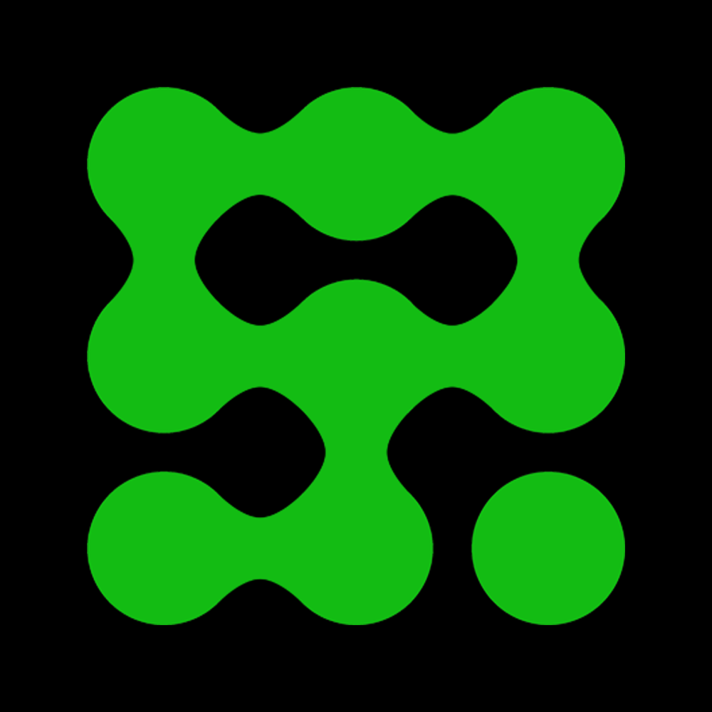

A software consultancy of senior engineers and ex-founders — many of them Bangor alumni. We work alongside teams on AI, infrastructure, and full-stack product development.
Francis Williams and William Faithfull started the company during their time at Bangor University, originally trading as Sourcepulp.
Joseph Mearman, Ben Dickinson, and James Jackson (on and off) joined soon after — all with roots in Bangor.

The company evolved in scope and ambition, taking on larger clients and more complex engagements under the ExaDev name. Sean Leach joined after lurking for a while.
We're happy to chat about ExaDev, working in tech, or anything else.